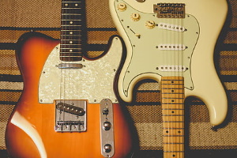

Equipment and Gear
𝅘𝅥𝅮 Preface 𝅘𝅥𝅮
In the world of guitars, there is a plethora of different types of equipment and gear that you can choose from. There are dozens of companies and brands that manufacture guitars, make strings, and other tools to enhance your playing. Choosing the right products for your desired sound can be a daunting task as the options are nearly endless. Luckily for you, we're here to show you the different types of equipment, and their specified purpose.
Guitar Types 𝅘𝅥𝅮
There are many different types of guitars that you can buy. From Acoustic, to Electric, Steel-Strings and Nylon-Strings. You can even get guitars with extra strings! However, for now we'll focus on the two main types: Acoustic and Electric.
Acoustic
Acoustic guitars are hollow and generally made out of wood. They do not rely upon electricity to amplify themselves, instead using their hollow center to carry the sound throughout the instrument. You can play them finger style, or you can use a pick. They can also be strummed to play chords. Below is a list of some well known companies that produce acoustic guitars.
- Yamaha
- Taylor
- Martin
- Ibanez
Acoustic guitars are a universal instrument, and can be heard in nearly every genre of western music.
Electric
Electric guitars do not usually have a hollow body, and rely on electricity to amplify their sound. They are also made out of wood, but usually have a Lacquer, Polyurethane, or Polyester finish on them. Electric guitars are extremely versatile, and can produce dozens of different of sounds. Different electric guitar brands and models have their own distinctive sounds, and usually specialize in certain types of musical genres. Below is a table illustrating different models, which genres they excel in, and their general price range.
| Model | Genres | Price |
|---|---|---|
| Fender Telecaster | Rock, Country, Blues, Alternative | $700+ |
| Fender Stratocaster | Rock, Blues, Jazz, Reggae | $700+ |
| Gibson Les Paul | Rock, Country, Blues, Jazz | $1,000+ |
| Ibanez RG Series | Metal, Metalcore, Rock | $400-$1000+ |
Any electric can technically play any genre of music, however some are used more often in certain genres over others. It all comes down to your personal preference and what sound you're trying to capture.
Universal Gear 𝅘𝅥𝅮
Now we'll cover some of the gear that all guitarists will need and use while playing.
Picks
Picks, or plectrums are used to pick or strum the strings as opposed to playing fingerstyle. They come in varying thicknesses and sizes. Which size you decide to use is completely personal preference. The thickness of the pick can have a minor affect on the sound produced.
Strings
Whats a guitar without its strings? Strings come in many different gauges. Acoustic strings typically are made in a heavier gauge than their electric alternatives. As with many other guitar items, strings factor into how your guitar will sound when played.
Tuner
For newer players, having an electronic tuner is a lifesaver. Guitar tuners can come in many different shapes and sizes. Most tuners are devices that attach to the headstock of your guitar, and you pluck each string to tune it accordingly. Other tuners may come in the form of a pedal. Tuner pedals, however, can only work if your guitar is plugged into it. In the modern age of cellphones, there are even many apps that you can use to tune your guitar.
Electric Essentials 𝅘𝅥𝅮
There is a great deal of equipment that electric guitarists can purchase to alter their sound. The following list of gear is used by electric guitarists.
Amplifier
Amplifiers are a requirement in order to play your electric guitar properly. Their job is in the name- they amplify the sound your guitar produces. Of all the equipment you can buy for your axe, the amplifier has the largest impact on your sound. There are many different brands to choose from when selecting an amplifier, and each have their own distinctive sounds.
Pedals
Effects pedals are used to alter the sound of your guitar. There are an endless amount of pedals you can use for nearly every type of sound imaginable. Some of the most commonly used pedals include: Distortion, Delay, Overdrive, Reverb, and Wah. These pedals are responsible for many of the very unique sound that electric guitars are capable of producing. However, be warned, buying new pedals can become highly addictive!
Cable
The cable is what is used to connect the guitar to the amplifier. Since it fufills such a simple task in your playing, their level of quality is often overlooked. However, any guitarist will tell you that there is nothing more infuriating than a low quality cable. Lower quality cables can interfere with the signal your guitar sends to the amplifier, and produce a staticy sound. Higher end cables also last much longer, and are well worth the extra $20 dollars.
𝅘𝅥𝅮 Conclusion 𝅘𝅥𝅮
As you can see, there is a wide array of items that you can purchase as a guitar player. It's very easy to get caught up on all the different options and brands. Unfortunately, this article barely scratches the surface- however it does cover the basics. At the end of the day, the decision that you make regarding what gear you use is entirely up to you and your ear. Many people will tell you that certain guitars, such as a Telecaster are not meant for genres like metal- that is entirely personal opinion. Another common misconception is that higher price = higher quality. Often times this happens to be the case, but there are many cases where it simply is not true. The beloved BOSS DS-1 is a legendary distortion pedal, used by a great deal of famous musicians. It only costs $50! Most importantly is what sound best suits your needs, and remember not to break bank!
Back to the Top